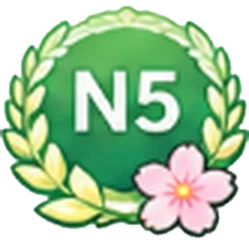
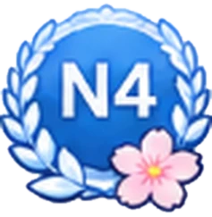
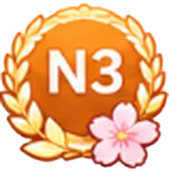
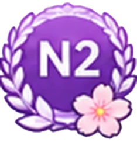
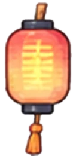

JAPANESE LEARNING JOURNEY
일본어를 배우고,
일본에서 살아보다.
두 가지 방식으로 일본어를 만나세요. Jay의 일본 생활을 따라가거나, JLPT 단계별 학습으로 기초를 단단히 다질 수 있어요.
현재 학습 단계N5최종 목표 JLPT N2
완료 챕터0JLPT 학습 기록
복습 대기0밀린 학습 · 오답
JLPT 등급지금은 N5, 목표는 N2

현재
다음

목표0%
0일 연속 학습학습 레벨 Lv.1
나의 두 가지 일본어 학습
08:00
Jay's Life in JapanJay가 일본에 정착하고 사람들을 만나며 살아가는 연속 생활 드라마
12:00
매일 일본어 N5 이야기매일 다른 주제로 어휘·문법·독해를 익히는 독립형 학습
두 콘텐츠는 매일 다른 시간에 제공됩니다. Jay 연재는 EP 번호, JLPT 학습은 CH 번호로 구분합니다.
학습 원칙
30~40분
하루 기본 학습 시간바쁜 날은 최소 15분
7 : 3
새 내용 70% · 복습 30%오답은 간격을 두고 다시 풀기
N5→N2
실력에 맞춰 진도 조절실제 숙달도에 맞춰 단계적으로 난이도를 높입니다.
JLPT STUDY
JLPT 학습 이어가기
목표 급수를 선택해 학습 자료로 이동하세요. 현재 N5 학습 과정과 실전 모의고사를 이용할 수 있습니다.
N5 MOCK TEST
실전 모의고사
문자·어휘, 문법·독해, 청해까지 실제 시험 순서로 연습합니다.
N5 학습 챕터

JAY'S LIFE IN JAPAN · SEASON 1
Jay, 일본에서
새로운 삶을 시작하다.
한국을 떠나 일본에 온 30대 Jay. 집을 구하고, 이웃을 만나고, 장을 보고, 일하며 조금씩 자기만의 일상을 만들어 갑니다.
연속 생활 드라마N5부터 N2까지매일 오전 8시
첫 번째 시즌 · 일본 정착기
Jay와 함께 배우는 방법
01
이야기 읽기일본어 원문과 문장별 직역, 모든 한자에 후리가나
02
생활 어휘와 문법그날 장면에서 실제로 필요한 표현을 익히기
03
상황 미션과 역할극Jay의 입장에서 선택하고 직접 말해 보기
04
문장 만들기배운 표현으로 나만의 문장을 완성하기
표현은 실제 일본 생활에서 쓰이는 용례와 학습용으로 만든 예문을 구분해 제공합니다. 확인하지 않은 대화를 실제 발화라고 소개하지 않습니다.
이 연재는 기존 JLPT 챕터와 별도로 관리합니다. Jay의 이야기는 EP 번호, 기존 읽기 학습은 CH 번호를 사용합니다.
STEP 1 · 이야기 읽기와 한국어 직역
먼저 일본어를 읽고, 바로 아래에서 문장별 직역을 확인하세요. 🔊 버튼으로 문장별 듣기, 전체 듣기를 할 수 있어요.
STEP 2 · 오늘의 어휘와 한자
한국어 뜻은 가려져 있어요. 뜻을 눌러 확인하고 다시 누르면 가려집니다.
STEP 3 · 핵심 문법
STEP 4 · 문장 만들기
먼저 직접 문장을 만들어 보고, 예시 답안을 눌러 확인하세요.
STEP 5 · 복습 테스트
STUDY HISTORY
N5 이야기 전체 목록
지금까지 등록한 JLPT N5 이야기를 모두 모았습니다. 최신 이야기부터 또는 첫 이야기부터 확인할 수 있습니다.
WORD NOTE
나의 단어장
뜻을 떠올린 뒤 눌러 확인하고 암기 상태를 기록하세요.
REVIEW LOOP
복습 · 오답 노트
지난 학습을 오늘 학습과 분리해 관리합니다.
다시 풀 문제
밀린 학습
YOUR PROGRESS
학습 통계
완료율0%
단어 암기0%
누적 오답0
현재 학습 기록은 이 브라우저에 저장됩니다. 기기 간 동기화는 아직 지원하지 않습니다.